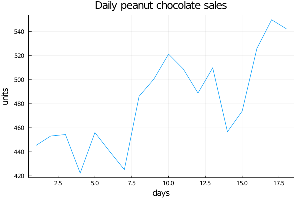
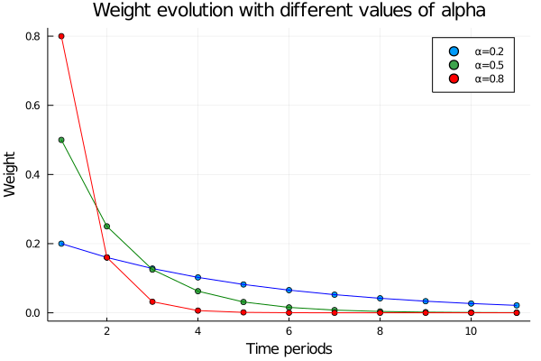
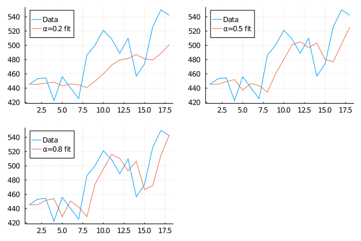
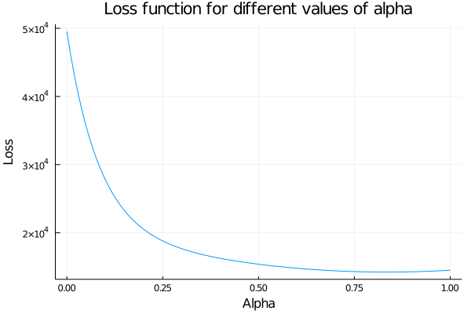
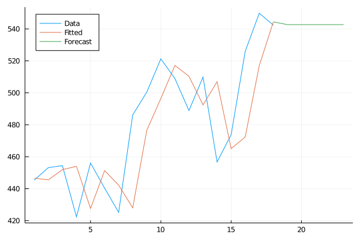
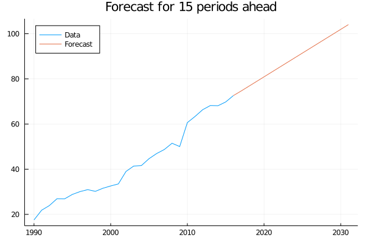
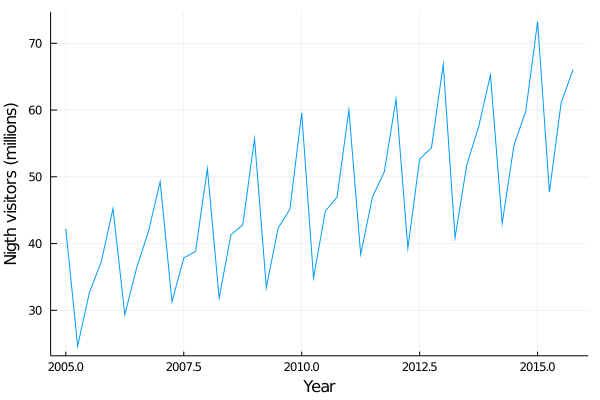
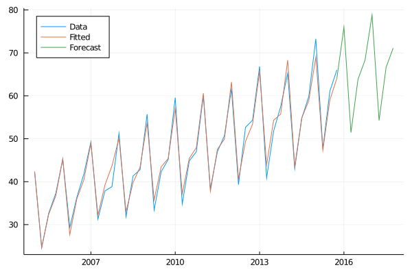

Chapter 13 Time series
13.1 Predicting the future
Let’s imagine this situation for a moment. We are sitting quietly in our house thinking about the beauty of data analysis, when an old friend calls us: Terry. We haven’t seen him for a long time, but he tells us that he is forming an important investment fund for which he needs to get some experts in statistics.
The idea is simple, he needs to generate predictive models of the supply and demand of certain commodities so that later, with this precious information, he can determine if the prices of those products are going to go down or up. Then you simply buy long or short positions (you don’t need to know much about that, basically you are betting on that prices are going to go up or down, respectively) on the stock market, hoping to make a lot of money.
With respect to the data, what you have available are long series with all the values that were taken by the supply and demand over time. In other words, we have time series.
This type of data has the particularity that its values are correlated since they are values of the same variable that changes over time. For example, the total amount of energy demanded by a nation today is closely related to yesterday’s demand, and so on.
For a moment we are paralyzed and realize that we never encounter this type of problem. We take a breath for a few seconds and remember everything we learned about Bayesianism, about neural networks, about dynamic systems. It may be complex, but we will certainly succeed.
We tell Terry we’re in. He smiles and gives us the first series: Peanut Chocolate.
begin
chocolate_sales = [445.36,453.20,454.41,422.38,456.04,440.39,425.19,486.21,500.43,521.28,508.95,488.89,509.87,456.72,473.82,525.95,549.83,542.34]
plot(chocolate_sales, title="Daily peanut chocolate sales", legend=false, ylabel="units", xlabel="days")
end
As we just said: Notice that the variables they are asking us to work with are values that are evolving over time, so they take the name of Time Series. This kind of variables are the ones we are going to deal with in this chapter and have the particularity that, as they evolve in time, the values they take are related to the previous ones. So can you think of something to solve the problem of predicting the next value the series is going to have?
Many ideas must be coming to your mind. Surely some of them thought of taking as a forecast value the average of all the previous ones and some others have thought of taking directly the last value of the series, justifying that the very old values do not affect the next ones. That is to say: \(y_{T+1|T}^- =\frac{1}{T} * \sum_{t=1}^{T}y_t\) Where T is the number of periods for which we have data. Or:
\(y_{T+1|T}^- = y_T\) Where we would always take the last value in the series to predict the next.
If we observe this carefully, we might realize that these are two extreme cases of the same methodology: assigning “weights” to the previous values to predict the next one. Basically this is the way we have to indicate how much we are interested in the old observations and how much in the new ones.
In the case of simple averaging, we would be saying that we care exactly the same about all the observations, since from the first to the last they are all multiplied by the same weights:
\(y_{T+1|T}^- =\frac{1}{T} * y_1 + \frac{1}{T} * y_2 + ... + \frac{1}{T} * y_T\) \(\sum_{t=1}^{T}\frac{1}{T} = 1\)
The second equation is only telling us that the sum of all the weights is equal to 1. Which also happens in the other case, where we assign the weight of the last value equal to 1 and leave all the others at zero:
\(y_{T+1|T}^- =0 * y_1 + 0 * y_2 + ... + 1 * y_T = y_T\)
But like many things in life, the optimal solution is usually somewhere in between the extremes.
So, a better solution would be one that allows us to take into account all the values of the series, but that the importance we are going to assign to it will decrease as we move away from older values. But how do we do this?
13.2 Exponential Smoothing
A very interesting idea to implement our idea of finding a method that allows us to take into account the most distant values, but assigning them a lesser weight, is that of the Exponential Smoothing.
The name may sound very complicated or crazy to you. The reality is that it is very simple. Basically, what we propose is to assign weights that are decreasing exponentially as the observations are getting older, getting to give a preponderant value to the closest values, but without resigning the valuable information that the previous values offer us:
\(y_{T+1|T}^- = α*y_T + α(1-α)*y_{T-1} + α(1-α)^2*y_{T-2} + ... + α(1-α)^{T-1}*y_1\)
That is:
\(y_{T+1|T}^- = \sum_{i=0}^{T-1}α(1-α)^j * y_{T-i}\)
Watch these two formulas for a while until you make sure you understand that they are the same :)
This way of writing the method is especially useful because it allows us to regulate how much weight we want to assign to the past values. What does this mean? That we can control how quickly the value of the weights will decline over time. As a general rule, with alpha values close to 1, a lot of weight will be given to the close values and the weights will decay very quickly, and with alpha getting close to 0 the decay will be smoother. Let´s see it:
begin
alphas = [0.2, 0.5, 0.8]
results = []
for alpha in alphas
weights = []
for i in 0:10
weight = alpha*(1-alpha)^i
push!(weights, weight)
end
push!(results, weights)
end
results
end## 3-element Array{Any,1}:
## Any[0.2, 0.16000000000000003, 0.12800000000000003, 0.10240000000000003, 0.08192000000000002, 0.06553600000000002, 0.052428800000000025, 0.041943040000000015, 0.033554432000000016, 0.026843545600000015, 0.021474836480000013]
## Any[0.5, 0.25, 0.125, 0.0625, 0.03125, 0.015625, 0.0078125, 0.00390625, 0.001953125, 0.0009765625, 0.00048828125]
## Any[0.8, 0.15999999999999998, 0.03199999999999999, 0.006399999999999996, 0.001279999999999999, 0.0002559999999999997, 5.119999999999994e-5, 1.0239999999999985e-5, 2.0479999999999963e-6, 4.095999999999992e-7, 8.191999999999982e-8]begin
scatter(results[1], label="α=0.2", title="Weight evolution with different values of alpha")
plot!(results[1], label=false, color="blue")
scatter!(results[2], label="α=0.5")
plot!(results[2], label=false, color="green")
scatter!(results[3], label="α=0.8", color="red")
plot!(results[3], label=false, color="red", xlabel="Time periods", ylabel="Weight")
end
As we said, as alpha gets closer to one, the importance of the closer values is greater and greater and when it gets closer to zero the opposite happens, that is, the importance is “more distributed” among all the observations. For example, in the case of choosing alpha = 0.5 we would have:
\(y_{T+1|T}^- = 0.5*y_T + 0.25*y_{T-1} + 0.125*y_{T-2} + 0.0625*y_{T-3} + ...\)
Well, then it seems we have a method that is good for estimating this kind of time series. But you’re probably wondering… How do we choose the optimal alpha?
The basic strategy is to go through the entire time serie predicting each of the values it has with the previous ones and then look for the alpha that minimizes the difference between them. Let’s see it: For this, we have to introduce two new ways of writing the same method.
13.2.1 Weighted average and Component form
Another way to write the same method and that will help us later with the choice of the alpha that best describes our data series is the Weighted average form. It simply proposes that the next value is a weighted average between the last value in the time series and the last prediction made:
\(y_{t+1|t}^- = αy_t + (1-α)*y_{t|t-1}^-\)
Notice that now the sub-index is changed from T to t, denoting that we are referring to any point of the time series and that, to calculate the prediction we are going to use the previous points of the series.
This is really very useful, since we can in this way go through all the time series and generate predictions for each point of it:
First, defining the prediction for the first value of the series as
\(y_{1|0}^- = lo\)
\(y_{2|1}^- = αy_1 + (1-α)*lo\)
\(y_{3|2}^- = αy_2 + (1-α)*y_{2|1}^-\)
\(...\)
\(y_{T+1|T}^- = αy_T + (1-α)*y_{T|T-1}^-\)
And if we substitute each equation within the other, we get the equation for prediction:
\(y_{3|2}^- = αy_1 + (1-α)*y_{2|1}^-\)
\(y_{3|2}^- = αy_1 + (1-α)*(αy_1 + (1-α)*lo)\)
\(y_{3|2}^- = αy_1 + (1-α)*αy_1 + (1-α)^2*lo\)
\(...\)
\(y_{T+1|T}^- = \sum_{i=0}^{T-1}α(1-α)^j * y_{T-i} + (1-α)^T*lo\)
And as \((1-\alpha)^T\) decays exponentially, for not very high values of T this term already becomes zero. So we obtain the same predicting formula as before.
Well, this is very good! We already have a way to go through the whole time series and make the predictions. This will be very useful since we can make these predictions for different alpha values and observe which one best approximates the whole series. Once this optimal alpha is obtained in this fitting process, we will be able to make the prediction for the future period.
Finally, there is one last way to define our models called Component form
\(y_{t+h|t}^- = l_t\)
\(l_t = α*y_t + (1 - α)*l_{t-1}\)
In the case of the Simple Exponential Smoothing it is identical to the Weighted average form, but it will make our work easier later when we want to make the analysis more complex.
13.2.2 Optimization (or Fitting) Process
Let’s start by seeing how using different alpha values we obtain different predicted value curves, defining a function that will make us the predictions of each value in the time series given a starting point (l0) and an alpha:
function SES_weight(α, l0, time_serie)
N = length(time_serie)
y_pred = 0
pred = []
for i in 1:(N)
if i == 1
y_pred = l0
else
y_pred = time_serie[i - 1] * α + y_pred * (1 - α)
end
push!(pred, y_pred)
end
return pred
end## SES_weight (generic function with 1 method)Let’s read the above algorithm together to make sure we understand that you are applying the formula explained above.
The function SES_weight receives three parameters: The alpha to make the calculation, the value of the first lo prediction, and the time series in question.
The algorithm begins by obtaining the number of points that the time series has and defining a vector in which we will be depositing all the predicted values of each point of it. Then it begins to iterate on the time series applying the formula mentioned above:
For the first predicted value \(y_{1|0}^- = y_{pred} = lo\) and for the following ones we apply the formula \(y_{t+1|t}^- = α*y_t + (1-α)*y_{t|t-1}^-\). Makes sense, right?
Then let’s get to work and see how our prediction curve fits the real data.
begin
pred_1 = SES_weight(0.2, 445.36, chocolate_sales)
pred_2 = SES_weight(0.5, 445.36, chocolate_sales)
pred_3 = SES_weight(0.8, 445.36, chocolate_sales)
endbegin
plot(chocolate_sales, label="Data", legend=:topleft)
p1 = plot!(pred_1, label="α=0.2 fit")
plot(chocolate_sales, label="Data", legend=:topleft)
p2 = plot!(pred_2, label="α=0.5 fit")
plot(chocolate_sales, label="Data", legend=:topleft)
p3 = plot!(pred_3, label="α=0.8 fit")
plot(p1, p2, p3)
end This is a very cool graphic to look at. It illustrates very clearly how small alphas look mostly like an average of the time series values and, as it starts to get closer to 1, it looks more like taking the last value in the series as a future prediction. As we said at the beginning of the chapter, this method allows us to find intermediate points between the two extremes.
It’s very nice to see how the graphs change as the alpha does… but how do we find the best alpha and l0 so that the fit is the best?
13.2.2.1 Loss functions
Somehow we have to be able to quantify how close the predicted curve is to the actual data curve. A very elegant way to do it is defining an error function or loss function which will return, for a certain value of the parameters to be optimized, a global number that tells us just how similar both curves are.
For example, one could go point by point looking at the real value of the time series and subtract the predicted value for that same point: \(y_{t} - y_{t|t-1}^-\). This subtraction is usually called a residual or error, so:
\(e = y_{t} - y_{t|t-1}^-\)
Then you add up all those differences and get the overall value of difference between the two series, right?
Well, actually there is one more step to go. As it can happen that sometimes the predicted value is greater than the value of the time series, the subtraction of these would be negative and in the same way, if the predicted value is lesser the subtraction will take a positive value. This is a complication when adding up these errors since they could cancel each other out.
To solve this, we usually take the absolute value of the subtraction, or the square values. Now the sum of the residuals will not be cancelled, no matter if it is positive or negative:
\(SSE = \sum_{i=1}^{T}(y_{t} - y_{t|t-1}^-)^2 = \sum_{i=1}^{T}e^2\)
\(SAE = \sum_{i=1}^{T}|y_{t} - y_{t|t-1}^-| = \sum_{i=1}^{T}|e|\)
Great! Now that we have a logical and quantitative methodology to determine how well our model is fitting the data, all that remains is to implement it. Let’s go for it!
function SES_weight_loss(α, l0, time_serie)
loss = 0
N = length(time_serie)
y_pred = 0
for i in 1:(N)
if i == 1
y_pred = l0
else
y_pred = time_serie[i - 1] * α + y_pred * (1 - α)
end
loss += (time_serie[i] - y_pred)^2
end
return loss
end## SES_weight_loss (generic function with 1 method)As you can see in the code we take the sum of errors squared as an error function. This algorithm is very similar to the previous one (with which we obtained each predicted point) only that now instead of saving the value, we compute its residual with the real data and we add it to the variable “loss.”
As a result we have a function that has as a parameter a time series, alpha and lo; and returns a number that is telling us the general error. Obviously that is the number we want to minimize.
Let’s see how the function behaves if we leave fixed lo (actually it is a value that we have to find with the minimization, but we know that it has to be near to the first value of the series) and we change alpha.
begin
aplhas = collect(0:0.01:1)
a = Array{Float64}(undef, length(aplhas))
for i in 1:length(aplhas)
a[i] = SES_weight_loss(aplhas[i], 445.36, chocolate_sales)
end
plot(0:0.01:1, a, xlabel="Alpha", ylabel="Loss", legend=false, title="Loss function for different values of alpha")
end
It is really very subtle, but the error function is not strictly decreasing. In fact, somewhere between 0.8 and 0.9 the function starts to grow again, so the minimum is there.
For this kind of problems Julia has a package to optimize functions:
function SES_loss_(params, time_serie=chocolate_sales)
return SES_weight_loss(params[1], params[2], time_serie)
end## SES_loss_ (generic function with 2 methods)begin
lower = [0., 400.]
upper = [1., 500.]
initial_x = [0.6, 450.]
res = optimize(SES_loss_,lower, upper, initial_x)
end## * Status: success
##
## * Candidate solution
## Final objective value: 1.423677e+04
##
## * Found with
## Algorithm: Fminbox with L-BFGS
##
## * Convergence measures
## |x - x'| = 1.38e-10 ≰ 0.0e+00
## |x - x'|/|x'| = 3.09e-13 ≰ 0.0e+00
## |f(x) - f(x')| = 0.00e+00 ≤ 0.0e+00
## |f(x) - f(x')|/|f(x')| = 0.00e+00 ≤ 0.0e+00
## |g(x)| = 6.73e-10 ≤ 1.0e-08
##
## * Work counters
## Seconds run: 0 (vs limit Inf)
## Iterations: 6
## f(x) calls: 347
## ∇f(x) calls: 347To use this function more efficiently it is necessary to define a range for the parameters in which the algorithm will perform the search and also a starting point (obviously within that range).
Also, one trick to keep in mind is that this package accepts “univariate” functions, that is, the function you enter only has to have one parameter to optimize. This is not entirely true since, although only one parameter has to be passed, it can be a vector, so that several parameters can be optimized. This is why we define a wrapper function SES\_loss\_ that facilitates the calculation.
With everything ready, let’s look for the values of alpha and lo that minimize our error function:
optim = Optim.minimizer(res)## 2-element Array{Float64,1}:
## 0.833783557110595
## 446.57308867544805And this is how we came to fit our model, obtaining the best parameters to try to predict the next sales of our beloved peanut chocolate
function SES_weight_forecast(α, l0, time_serie, n_pred)
N = length(time_serie)
y_pred = 0
pred = []
for i in 1:(N)
if i == 1
y_pred = l0
else
y_pred = time_serie[i - 1] * α + y_pred * (1 - α)
end
push!(pred, y_pred)
end
y_pred = time_serie[N] * α + y_pred * (1 - α)
for j in 1:n_pred
push!(pred, y_pred)
end
return pred
end## SES_weight_forecast (generic function with 1 method)As you can see, the simple exponential smoothing method only gives us a forward value. In other words, it predicts a constant value into the future. This happens because these types of time series have no latent variables defined, such as trend or seasonality. These are variables that add information to the model and allow us to make different predictions for each time we want to predict.
But do not worry about that for now, we will study it well in a short time. For now, let’s see how the prediction would look like.
forecast = SES_weight_forecast(0.833784, 446.573, chocolate_sales, 5)begin
plot(1:18, chocolate_sales, label="Data", legend=:topleft)
plot!(1:18, forecast[1:18], label="Fitted")
plot!(18:23, forecast[18:end], label="Forecast")
end
Perfect! We already have an initial model to attack problems where there is a lot of variability. But this is not always the case.
That same night we talked to Terry, showed him the progress and he loves the direction we are going. He tells us that he has another time series to analyze and that he has a different behavior than the previous one, apparently this one shows a trend in the values…
Let’s see:
13.2.3 Trend Methods
Now that we have built up an intuition of how Simple Exponential Smoothing logic works, wouldn’t it be good to have some additional method that allows us to learn if our time series has a certain tendency?
But what does this mean in the first place? It means that there are some processes that inherently, by their nature, follow a marked tendency beyond random noise
For example, if we take the amount of AirPassenger in Australia from 1990 to 2016, we find this graph:
begin
time_ = collect(1990:2016)
data = [17.55,21.86,23.89,26.93,26.89,28.83,30.08,30.95,30.19,31.58,32.58,33.48,39.02,41.39,41.60, 44.66,46.95,48.73,51.49,50.03,60.64,63.36,66.36,68.20,68.12,69.78,72.60]
endplot(time_, data, label=false)
In this type of problem, it would not make any sense for all the predictions to be constant. Here is more latent information that we can get from the data: The trend.
This will be key since, once obtained, it will allow us to generate new values as we want to make more distant forecasts in time.
But how do we include this in our exponential smoothing model?
13.2.3.1 Holt’s linear trend method
This method for making predictions with time series that have a trend consists of a prediction equation and two smoothing equations, one to determine the level and another for the slope (or trend):
\(y_{T+h|T}^- = l_t + hb_t\)
\(l_t = αy_t + (1 - α)(l_{t-1} + b_{t-1})\)
\(b_t = β*(l_t - l_{t-1}) + (1 - β)b_{t-1}\)
In this way, the equation for making predictions is simply to take the last predicted level (up to here it is equal to the Simple Exponential Smoothing) and add as many “slopes” as periods ahead we want to predict. The value of the slope to make the forecast is also the last predicted one.
As you can see, the values of alpha and beta are going to weigh each of the Smoothing equations.
On the one hand, alpha will weight the values of the previous real observation \(y_{t-1}\) and the predicted one using the prediction equation with the values of l and b above, to obtain the actual value of the level \(l_{t}\)
On the other hand, the beta value will be telling us how much we are going to let the value of the slope be modified. This value has the function of weighting between the current slope found \(l_t - l_{t-1}\) against the estimated slope in the previous point, to calculate the estimation of the slope in the current period. In this way, small beta values indicate that the slope is unlikely to change over time, and high values allow the slope to change freely (the value of the “current” slope \(l_t - l_{t-1}\) becomes preponderant in the estimation).
With this method, then, forecasts stop being flat to become trended. With this idea in mind, let’s translate the math into code again:
function HLT_loss(time_serie, α, β, l0, b0)
N = length(time_serie)
l_t = 0
b_t = 0
l_t_ = 0 #Variable to save l(t-1)
loss = 0
for i in 1:(N)
if i == 1
l_t = l0
b_t = b0
else
l_t = time_serie[i - 1] * α + (l_t + b_t) * (1 - α) #b_t is taking b(t-1) value
b_t = β * (l_t - l_t_) + (1 - β) * b_t
end
l_t_ = l_t
y_pred = l_t + b_t
loss += (time_serie[i] - y_pred)^2
end
return loss
end## HLT_loss (generic function with 1 method)This function is doing exactly the same as SES\_weight\_loss, which we defined earlier. It is good to clarify that, like it, the method needs an initial slope to make the estimation of the first value of the time series. Let’s see which parameters optimize the model with the data we have!
function HLT_loss_(params, time_serie=data)
return HLT_loss(time_serie, params[1], params[2], params[3], params[4])
end## HLT_loss_ (generic function with 2 methods)begin
lower_ = [0., 0., 10., 1.]
upper_ = [1., 1.,30., 3]
initial_x_ = [0.5, 0.5, 15., 2.]
res1 = optimize(HLT_loss_, lower_, upper_, initial_x_)
end## * Status: success
##
## * Candidate solution
## Final objective value: 1.284222e+02
##
## * Found with
## Algorithm: Fminbox with L-BFGS
##
## * Convergence measures
## |x - x'| = 1.88e-09 ≰ 0.0e+00
## |x - x'|/|x'| = 1.17e-10 ≰ 0.0e+00
## |f(x) - f(x')| = 0.00e+00 ≤ 0.0e+00
## |f(x) - f(x')|/|f(x')| = 0.00e+00 ≤ 0.0e+00
## |g(x)| = 2.35e-09 ≤ 1.0e-08
##
## * Work counters
## Seconds run: 0 (vs limit Inf)
## Iterations: 4
## f(x) calls: 456
## ∇f(x) calls: 456As with the “SES” we define a wrapper function to be able to perform the optimization. The minimum and maximum values of lo are obtained with the same criterion: The optimal value has to be close to the first value of the time series, since it is going to be its estimation. With respect to the minimum and maximum value of the slope the criterion is again looking into the data: If you see the graph of the time series you can clearly see that the slope has to be between 1 and 3 (you can see that every 5 years that pass, the number of passengers increases by 10, more or less).
Let´s see the optimal values for the parameters:
optim1 = Optim.minimizer(res1)## 4-element Array{Float64,1}:
## 0.8215406656136957
## 1.6174079495295674e-13
## 15.84752428792649
## 2.098148935300456Perfect! Now that we have the optimal parameters to perform the forecast, we just need to define a function that performs it. For example:
function HLT_forecast(time_serie, α, β, l0, b0, n_pred)
N = length(time_serie)
l_t = 0
b_t = 0
l_t_ = 0
pred = []
for i in 1:(N)
if i == 1
l_t = l0
b_t = b0
else
l_t = time_serie[i - 1] * α + (l_t + b_t) * (1 - α) #b_t "is" b(t-1)
b_t = β * (l_t - l_t_) + (1 - β) * b_t
end
l_t_ = l_t
end
l_t = time_serie[end] * α + (l_t + b_t) * (1 - α)
b_t = β * (l_t - l_t_) + (1 - β) * b_t
for i in 1:n_pred
y_pred = l_t + b_t * i
push!(pred, y_pred)
end
return vcat(time_serie, pred)
end## HLT_forecast (generic function with 1 method)As you can see in the function, the first part of it (the first for) goes through the entire time series using the parameters already optimized and making the best predictions for each point.
Then, when we reach the end of the time series, the second “for” begins (it will iterate the amount of periods we want to predict, value that we enter as “\(n\_pred\)”) to make now forecasts of periods that have not yet happened. To do this, it simply uses the last “level” that was estimated for the last value of the time series, and adds up as many slopes as periods we want: \(y_{pred} = l_t + b_t * i\)
Finally, it returns a concatenation of the time series plus the values we ask it to predict.
data_forecasted = HLT_forecast(data, 0.8321, 0.0001, 15.57, 2.102, 15)begin
plot(time_, data_forecasted[1:length(data)], label="Data", legend=:topleft)
plot!(time_[end]:(time_[end]+15), data_forecasted[length(data):end], label="Forecast", title="Forecast for 15 periods ahead")
end
And so it is. We already built a tool that allows us to make predictions for variables that show a trend.
But surely you are thinking that assuming that the trend is going to be maintained during all the years that we are forecasting is a bit excessive? And it’s true that it is.
It is known that this type of methods usually overestimate the values of the variable to predict, exactly because they suppose that the tendency continues.
A improvement of this method that helps to deal with this problem it is the Damped trend methods. Basically, what it does is add a coefficient that flattens the curve as we want to make more distant predictions in time. This improvement makes better predictions than the common trend methods, leaving the formulas as:
\(y_{T+h|T}^- = l_t + (ϕ + ϕ^2 + ... + ϕ^h)b_t\)
\(l_t = αy_t + (1 - α)(l_{t-1} + ϕ*b_{t-1})\)
\(b_t = β*(l_t - l_{t-1}) + (1 - β)*ϕ*b_{t-1}\)
In this way, at the time of making the predictions and as we want to make them over more distant periods, instead of adding a unit of b_t to each one, we add a smaller fraction each time until the sum is practically constant.
For example, before, with the simple trend method, if we want to estimate the value of the next period the count to be done was (assuming, for example, that \(l_t\) and \(b_t\) in the last period of the time series were worth 300 and 1.5):
\(y_{T+1|T}^- = 300 + 1.5 = 301.5\)
and if we wanted to make a forecast for the next period to the one just calculated, it would be:
\(y_{T+2|T}^- = 300 + 1.5 + 1.5 = 300 + 1.5*2 = 303\)
That is, a constant unit of \(b_t\) is added for each new period that is predicted.
On the other hand, when we use the “damped method” the fraction of \(b_t\) that we are adding falls exponentially, since we are multiplying it by a number less than 1 and that is rising to an increasing power. Following the same example, and adding a damping parameter equal to 0.9, we would obtain:
\(y_{T+1|T}^- = 300 + 0.9*1.5 = 300 + 1.35 = 301.35\)
\(y_{T+2|T}^- = 300 + 0.9*1.5 + 0.9^2 * 1.5 = 300 + 0.9*1.5 + 0.81 * 1.5 = 302.565\)
The process continues in this way until the value of \(ϕ^t\) is zero, that is to say that although it continues going further in the periods, to the result of the forecast no longer is added any significant term. This is why it is said that the damped method tends to make flat forecasts in the long term.
Finally, let’s note that the damping parameter takes values between 1 and 0. being completely identical to the simple trend method for a value of 1 and completely flat for a value of 0. Let´s see:
function Damped_HLT_forecast(time_serie, α, β, l0, b0, ϕ, n_pred)
N = length(time_serie)
l_t = 0
b_t = 0
l_t_ = 0
pred = []
for i in 1:(N)
if i == 1
l_t = l0
b_t = b0
else
l_t = time_serie[i - 1] * α + (l_t + b_t) * (1 - α) #b_t "is" b(t-1)
b_t = β * (l_t - l_t_) + (1 - β) * b_t
end
l_t_ = l_t
y_pred = l_t + b_t
end
l_t = time_serie[end] * α + (l_t + b_t) * (1 - α)
b_t = β * (l_t - l_t_) + (1 - β) * b_t
phi = 0
for i in 1:n_pred
phi += ϕ^i
y_pred = l_t + b_t * phi
push!(pred, y_pred)
end
return vcat(time_serie, pred)
end## Damped_HLT_forecast (generic function with 1 method)damped_forecast = Damped_HLT_forecast(data, 0.8321, 0.0001, 15.57, 2.102, 0.96 , 15)begin
plot(time_, damped_forecast[1:length(data)], label="Data", legend=:topleft)
plot!(time_[end]:(time_[end]+15), data_forecasted[length(data):end], label="Holt´s Forecast")
plot!(time_[end]:(time_[end]+15), damped_forecast[length(data):end], label="Damped Forecast", title="Damped forecast with ϕ=0.96")
end
Incredible! Terry calls us and tells us that using the “damped” model was key to a trade he made. He is very excited about our work and gives us one last challenge.
He tells us that he is trying to enter more complex markets, particularly tourism, but that he doesn’t understand how to approach this type of series since they show a lot of variability. For example, we start analysing the visitor nights in Australia spent by international tourists:
begin
australia_tourist = [42.20566, 24.64917, 32.66734, 37.25735, 45.24246, 29.35048, 36.34421, 41.78208, 49.27660, 31.27540, 37.85063, 38.83704, 51.23690, 31.83855, 41.32342, 42.79900, 55.70836, 33.40714, 42.31664, 45.15712, 59.57608, 34.83733, 44.84168, 46.97125, 60.01903, 38.37118, 46.97586, 50.73380, 61.64687, 39.29957, 52.67121, 54.33232, 66.83436, 40.87119, 51.82854, 57.49191, 65.25147, 43.06121, 54.76076, 59.83447, 73.25703, 47.69662, 61.09777, 66.05576]
time = collect(2005:0.25:2015.75)
endplot(time, australia_tourist, xlabel="Year", ylabel="""Nigth visitors (millions)""", legend=false)
As you can see, the series shows a lot of variability. The values go up and down constantly.
After being a long time with Terry looking for ideas to address this type of data we realize that these ups and downs are not random, indeed, the form is repeated year after year! We realize that we are facing a problem with seasonality.
13.2.4 Seasonality Methods
For this type of model, in addition to the level and trend parameters, it is necessary to add another component that captures the time of year (actually it can be any other period in which seasonality occurs) in which we are and somehow influences the predicted outcome.
In this way, the level and trend parameters will behave as we have already studied them, but the seasonality parameter will be adjusting (adding and subtracting or multiplying and dividing, depending on the method) the predicted level.
In the same line with the Exponential smoothing that we have been studying, the model can be made more complex to add an additive or multiplicative seasonality. Here we will stop at the additive:
13.2.4.1 Holt-Winters’ seasonal additive method
For this method, we will need to add a smoothing equation for the seasonality parameters. In addition, we will have to indicate the frequency with which the seasonality occurs in the analyzed period and denote it with the letter \(m\). For example, for a monthly seasonality \(m = 12\) and for a semester one \(m = 2\).
So, the model becomes like this:
\(y_{T+h|T}^- = l_t + hb_t + s_{t+h-m(k+1)}\)
\(l_t = α(y_t - s_{t-m}) + (1 - α)(l_{t-1} + b_{t-1})\)
\(b_t = β*(l_t - l_{t-1}) + (1 - β)b_{t-1}\)
\(s_t = γ(y_t - l_{t-1} - b_{t-1}) + (1 - γ)s_{t-m}\)
As we had already anticipated, the seasonality term is added to the forecast equation. The term \(k\) is the integer part of \((h-1)/m\) and its function is to ensure that we always make predictions with the values of the parameters in the last year of the time series we have as data.
The level equation is still a weighted average, only now the seasonal component is added to the observation \((y_t - s_{t-m})\). The other part of the average is the non-seasonal forecast \((l_{t-1} + b_{t-1})\).
The trend equation remains the same, and the seasonality equation also represents a weighted average between the current \((y_t - l_{t-1} - b_{t-1})\) and previous year’s index for the same season \(s_{t-m}\). This average is weighted by the γ parameter.
Now so, let’s put these weird equations into code:
function HW_Seasonal(time_serie, α, β, γ, l0, b0, s0, m)
N = length(time_serie)
l_t = 0
b_t = 0
l_t_ = 0 #Variable to save l(t-1)
b_t_ = 0 #Variable to save b(t-1)
s_ = 0
s = s0
pred = []
for i in 0:(N - 1)
if i == 0
l_t = l0
b_t = b0
else
l_t = (time_serie[i] - s_) * α + (l_t_ + b_t_) * (1 - α)
b_t = β * (l_t - l_t_) + (1 - β) * b_t_
end
l_t_ = l_t
b_t_ = b_t
s_ = s[i%m + 1]
y_pred = l_t + b_t + s[i%m + 1]
push!(pred, y_pred)
s[i%m + 1] = γ * (time_serie[i + 1] - l_t_ - b_t_) + (1 - γ) * s[i%m + 1]
end
return pred
end## HW_Seasonal (generic function with 1 method)What this code does is, given the optimal values of each parameter, it makes the prediction of the next point (h = 1) and stores them in the “pred” array. Staying a while analyzing how the algorithm is working is an excellent way to ensure full understanding of the method :)
To obtain these parameters it is necessary to write the loss function as we have been doing in the previous ones. As a challenge for the reader, we propose to write this loss function using this one as a basis. To help you, you can look at the intimate relationship between the functions that are storing the predictions and the loss functions already written in the previous methods.
In this particular case, in which our data is quarterly, m = 4. Doing the same procedure as always to optimize the function is obtained:
begin
α = 0.262198
β = 2.45705e-15
γ = 0.454665
l0 = 32.4906
b0 = 0.701097
s0 = [9.20323, -9.18886, -2.13981, 1.35917]
end;It is interesting to stop and look at these values that we obtained.
First of all it is remarkable how, for the first time, the parameter \(α\) is taking a relatively low. This makes perfect sense, as the values are now much more connected to values further away than the immediate previous one, for example. They are connected precisely because of their seasonality.
It is also interesting to note how for the initial values of the seasonality not only one value is needed, but also 4. As a general case, as much as m, the frequency of the seasonality, will be needed. This can be seen as we now need to have a whole “year 0” to make the estimates for the first year of the time series.
Now, let’s see the function in action:
season_fitted = HW_Seasonal(australia_tourist, 0.262198, 2.45705e-15, 0.454665, 32.4906, 0.701097, [9.20323, -9.18886, -2.13981, 1.35917], 4)begin
plot(time, season_fitted, label = "fitted")
plot!(time, australia_tourist, label = "data", legend=:topleft)
end
As you can see, the fit is very good. It is also interesting how you can appreciate the exponential smooth in the step between the valley and the peak: It starts without having it and therefore the adjusted series neither, but as it appears, the model learns it and also starts to forecast it.
Excellent! Now that we have our model, it’s time to use it and call Terry to tell him what actions to take in his trading strategy:
function HW_Seasonal_forecast(time_serie, α, β, γ, l0, b0, s0, m, n_pred)
N = length(time_serie)
l_t = 0
b_t = 0
l_t_ = 0 #Variable to save l(t-1)
b_t_ = 0 #Variable to save b(t-1)
s_ = 0
s = s0
pred = []
for i in 0:(N - 1)
if i == 0
l_t = l0
b_t = b0
else
l_t = (time_serie[i] - s_) * α + (l_t_ + b_t_) * (1 - α)
b_t = β * (l_t - l_t_) + (1 - β) * b_t_
end
l_t_ = l_t
b_t_ = b_t
s_ = s[i%m + 1]
y_pred = l_t + b_t + s[i%m + 1]
push!(pred, y_pred)
s[i%m + 1] = γ * (time_serie[i + 1] - l_t_ - b_t_) + (1 - γ) * s[i%m + 1]
end
l_t = (time_serie[end] - s_) * α + (l_t + b_t) * (1 - α)
b_t = β * (l_t - l_t_) + (1 - β) * b_t_
for i in N:(N+n_pred - 1) #sino hace una pred de mas
y_pred = l_t + b_t*(i-N+1) + s[i%m + 1]
#The trend has to be added as many times as periods we want to forecast.
push!(pred, y_pred)
end
return pred
end## HW_Seasonal_forecast (generic function with 1 method)season_forecast = HW_Seasonal_forecast(australia_tourist, 0.262198, 2.45705e-15, 0.454665, 32.4906, 0.701097, [9.20323, -9.18886, -2.13981, 1.35917], 4, 8)begin
plot(time, australia_tourist, label="Data", legend=:topleft)
plot!(time, season_forecast[1:44], label="Fitted")
plot!(time[end]:0.25:time[end]+2, season_forecast[44:end], label="Forecast")
end
Well, good! We started this chapter not knowing how to tackle time series forecasting problems and ended up building a wide variety of models for different types of data, all while making our friend Terry a lot of money!
As a final summary, when dealing with a time series it is very important to be able to define if it has any latent variables such as trend or seasonality. Once we can find that underlying information, we will be able to generate forecasts with confidence. We just need to look deeper.
13.3 Summary
In this chapter, we learned the basic foundations of time series analysis. We defined what a time series is and delved into a particular method, the exponential smoothing, that allows us to take into account the most distant values of our data. Finally, we explained more complex versions of the method and used them to make predictions in different kinds of scenarios. When the processes followed a marked tendency, we used the trend method and the damped trend method to make long term predictions. When the process exhibited seasonal trends, we utilized the Holt-Winters’ seasonal method.
13.4 References
13.5 Give us feedback
This book is currently in a beta version. We are looking forward to getting feedback and criticism:
- Submit a GitHub issue here.
- Mail us to martina.cantaro@lambdaclass.com
Thank you!